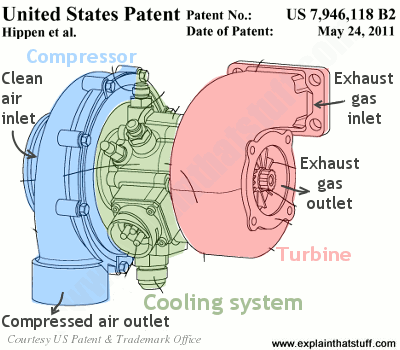

Aspiration is defined by Oxford Languages as "The action or process of drawing breath." A car's aspiration is just that: the process of how air is drawn into the combustion chamber of an engine. More air allows for more fuel to be used, which as a result, allows for more power, and who doesn't like power?
Different Types of Aspiration
Naturally Aspirated engines use atmospheric pressure and a vacuum in order to suck air into the engines cylinders. Essentially, a drop in pressure is created in the engine, which allows for air to flow into the engines intake. Note that air (and other gases or gaseous mixtures) will flow from high pressure to low pressure in order to evenly distribute itself. Hence the name naturally aspirated, these engines are solely dependent on outside conditions for air flow through the engine, which can cause inefficiencies under certain conditions.
Higher altitudes have a greater impact on the cars power output. Since as altitude increases the atmospheric pressure will decrease, a lower amount of power will be output since the engine will struggle more to get air into the engine. According to Garrett Advancing Motion, for every 1,000 feet of altitude over sea level, a naturally aspirated engine will result in a loss of 3% power.
Turbochargers are widely known and loved by many car enthuasiast. However, slapping on a turbocharger turns out to not always be the best idea. First, let's discuss what a turbocharger is and how it works.
A Turbocharger is built up of two different halves, with a cooling system in the center. The two halves are two fans connected to one another by a metal shaft. One half, the turbine, is connected to the exhaust, and is spun by the exhaust gases, spinning the other half, the compressor, forcing air into the engine.
"[E]xhaust gases go into the turbocharger and spin it, witchcraft happens and you go faster." - Jeremy Clarkson
Fuel efficiency is a common concern when it comes to turbocharging an engine. Although the fuel efficiency definitely decreases since more air being forced into the engine causes for more fuel to be consumed. However, more power is also outputted. Many companies can counteract a lost in fuel consumption when adding a turbo by downsizing the engine, effectively creating a smaller engine with the same power as the original.